Curiosidades sobre AC/DC
A música "The Jack" , é sobre uma mulher que contaminava seus parceiros com doenças venéreas.
Em , a RIAA atualizou o número de álbuns vendidos pela banda nos Estados Unidos de 63 milhões para 69 milhões de cópia vendidas, fazendo do AC/DC a quinta banda que mais vendeu álbuns nos Estados Unidos e o décimo artista que mais vendeu álbuns nos Estados Unidos, vendendo mais que Madonna, Mariah Carey e Michael Jackson. A RIAA também certificou Back in Black como dupla platina (vinte milhões) nos Estados Unidos, o álbum já vendeu mais de 22 milhões de cópias, sendo o quinto álbum mais vendido da história do país.
A polícia e a imprensa acusaram os AC/DC de corromper mentes juvenis depois que pegaram Richard Ramirez, conhecido por " Night Stalker" (Espreitador Noturno). Aparentemente, quando ele foi preso estava vestindo uma camisa dos AC/DC, e tinha copiado algumas letras do AC/DC pouco antes.
Em , morre tragicamente o vocalista Bon Scott, afogado em seu próprio vômito depois de ingerir bebidas alcóolicas em excesso. A perda marcou profundamente a banda.
A irmã de Angus e Malcolm Young, Margaret, criou o nome. Aparentemente ela achou a sigla em um eletrodoméstico, e achou que casava bem com a banda, visto que tinha a ver com eletricidade (AC/DC é um indicativo de corrente contínua e alternada). Depois descobriram que era também uma gíria que designava bissexuais mas já era tarde. São infundadas as versões de que o nome seria uma sigla para Anti-Christ/Dead-Christ (anticristo, cristo morto).
Bon Scott toca a gaita de foles no final de "I's a Long Way to the Top".Ele aprendeu a tocar na sua juventude e chegou a tocar na banda marcial escocesa de seu pai quando era jovem.
Angus sempre tocou apenas um tipo de guitarra, uma Gibson SG. Malcolm, por outro lado, tocou uma Gretsch Rock Jet de que foram tirados todos os controles, exceto o botão de volume, durante alguns anos.
No dia , uma rua de Melbourne, Corporation Lane, foi renomeada para ACDC Lane em homenagem à banda.A rua fica perto da Swanson Street, onde a banda gravou o videoclipe de da música "I's a Long Way to the Top (If You Wanna Rock ' Roll)". Uma rua em Leganés, Espanha recebeu o nome de "Calle de AC/DC" no dia .
Angus perde durante um show 7 quilos, e percorre o palco cerca de 8 kilometros.
A banda já recebeu uma indicação para o American Music Awards em como "Melhor Banda/Dueto/Grupo de Pop/Rock".E também já foi indicada no MTV Video Music Awards como "Melhor Videoclipe de Heavy Metal/Hard Rock" com "Thunderstruck".
Em seu livro Dirty Deeds: My Life Inside/Outside AC/DC, o baixista Mark Evans relembra o primeiro show do grupo na Inglaterra. A apresentação ocorreu em , em Londres.
Depois da morte de Bon, a banda recebeu uma carta de um fã de 14 anos, contando como o tal de Brian Johnson seria um bom substituto para Bon. Após ler a carta, Malcon lembrou-se que a banda havia assistido a uma performance de Brian Johson, e que Bon havia comentado sobre que grande cantor Brian Johson era. Então os AC/DC fizeram uma audição e aceitaram-no.
A história do uniforme escolar do Angus é que quando era mais jovem ele voltava da escola, pegava a guitarra e saia novamente para tocar, ainda com o uniforme da escola. Mais tarde, quando a banda começou, sua irmã Margaret sugeriu que ele devia continuar usando aquilo. Ele não concordou mas depois foi convencido pelo irmão George, que achou que o uniforme faria as pessoas lembrarem da banda.
A música " Suicide Solution" de Ozzy Osbourne não fala sobre suicídio, ao contrário do que a maioria das pessoas imaginam; na realidade, sua letra trata sobre alcoolismo e foi escrita por Ozzy quando o vocalista do AC/DC, Bon Scott, morreu de coma alcóolico. A palavra "solution" do título é "solução" no sentido de "mistura" e não no sentido de "resposta". A tradução correta seria "mistura suicida" se referindo ao álcool.
Angus Young é hoje considerado o maior ícone do rock.
A Rosie da faixa "Whole Lotta Rosie" do AC/DC existiu na vida real. Tratava-se de uma mulher natural da Tasmânia, possuidora das dimensões descritas na música, que Bon Scott conheceu (e com o qual passou uma noite) em Melbourne, Austrália... e anos depois por ocasião de uma apresentação da banda naquele país Bon reencontrou a tal mulher, que todavia havia feito um regime bravíssimo, e perdido boa parte de sua "robustez"...
Em Três fãs morrem esmagados em em um show do AC/DC em Salt Lake City.
O AC/DC entrou no Rock and Roll Hall of Fame em . Durante a ceremônia a banda tocou "Highway to Hell" e "You Shook Me All Night Long", com os vocais feitos por Steven Tyler do Aerosmith. Durante o discurso, Brian Johnson citou a música deles " Let There Be Rock".
No dia , Bon Scott passou a noite inteira bebendo em Londres. Na manhã seguinte, Alistair Kinnear (um conhecido de Scott) o levou ao hospital em Camberwell, Scott foi declarado morto quando chegou ao hospital. Aspiração pulmonar de vômito foi a causa da morte de Bon Scott.No documento oficial de sua morte está listado como "intoxicação por álcool" e "morte por desventura".
Quando tudo parecia ser o fim, os pais de Bon Scott deram a maior força para AC/DC continuar, afinal eles eram uma banda jovem e tinham muito para oferecer. Então, Brian Johnson foi convidado por Malcolm e Angus Young que assistiram um show com o antigo vocalista Bon Scott e que Brian Johnson estava se apresentando com sua banda, Geordie. Brian Johnson chegou atrasado na audição onde foi escolhido como novo vocalista, mas quando começou a cantar, o sorriso renasceu nos rostos de Angus e Malcolm pela primeira vez desde a morte de Scott. No mesmo ano, o AC/DC voltou com tudo, lançando Back in Black, álbum que foi uma homenagem (até no nome) a Bon, vendendo mais de 20 milhões de cópias só nos E.U.A. na época de seu lançamento. Back in Black é hoje o segundo disco mais vendido da história (42 milhões de cópias), só perdendo para Thriller (54 milhões de cópias), de Michael Jackson.
A banda já recebeu várias indicações para o Grammy Awards, "Melhor Performance de Hard Rock" quatro vezes, " Blow Up Your Video" em , "The Razors Edge" em , " Moneytalks" em e "Highway to Hell" em , e "Melhor Performance de Rock por um Dueto ou Grupo" em com "Rock N Roll Train".
AC/DC vendeu cerca de inacreditáveis 80 milhões de albuns desde a existência da banda!

 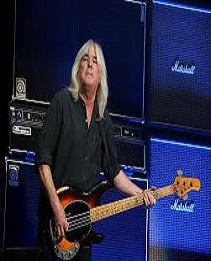
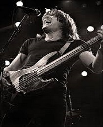
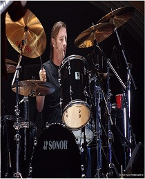
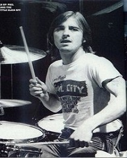
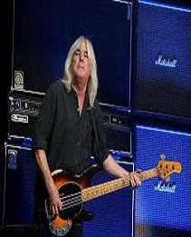
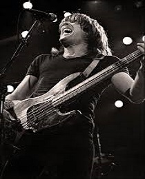
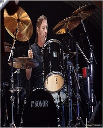
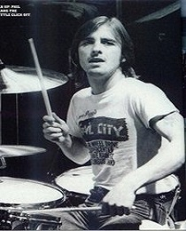


 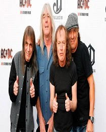
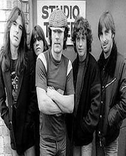
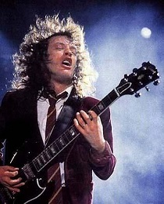
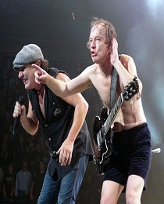
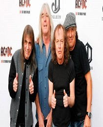
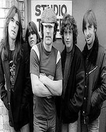
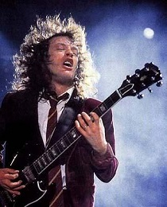
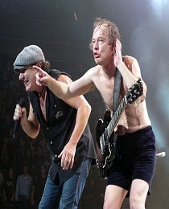